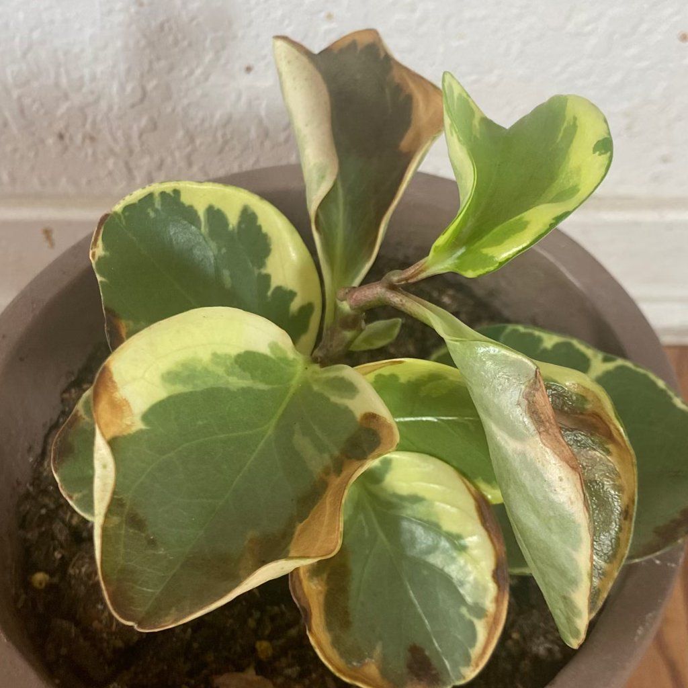
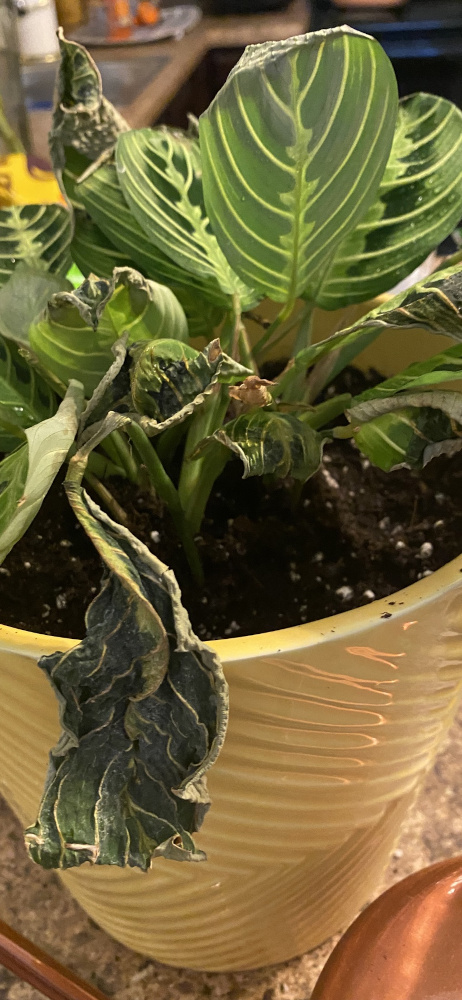
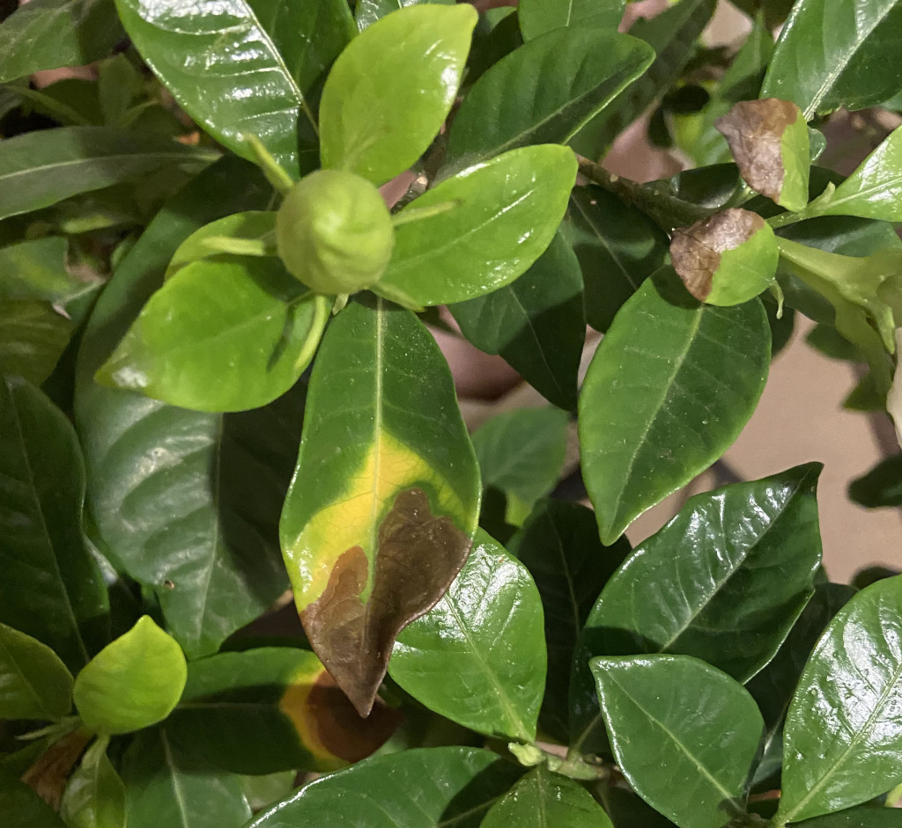
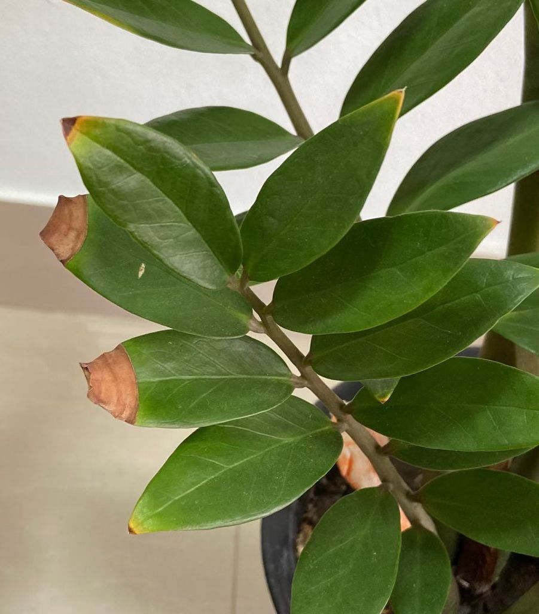

浇水过多或不平衡
你看到的现象
叶片发黄、软烂，基部或叶柄水渍状，盆土长期潮湿发酸，有霉味；新根少，老根发黑糜烂；偶见“时湿时干”后叶缘焦枯。
是什么
过量浇水或浇水极不均造成的水分胁迫。长期积水会缺氧致根腐；反复“淋湿—干透—再淋湿”也会损伤组织。
是否属于正常现象
是真实问题，需要纠正浇水与基质。若已出现根腐，应尽快处理。
可能原因
- 盆无排水孔/土过黏；
- 低光低温下仍高频浇水；
- 托盘长期存水；
- 一次性浇太猛，随后又长时间断水。
如何确认
- 湿度计/手测：盆心长期湿冷；
- 根系：脱盆可见黑褐、易拉断的烂根；
- 气味：土腥转臭；
- 叶症：下部叶黄垂软，上部新叶小且薄。
你可以做什么
- 急救与整顿：立即倒空托盘，移至通风明亮处；若疑似根腐，脱盆修根：剪除烂根、根部消毒（按说明），新土换盆。
- 优化基质与花盆：使用疏松排水土（泥炭/椰糠+珍珠岩/松鳞），盆底加网防堵孔；盆不宜过大。
- 重建节律：明亮处“见干见湿”，阴凉处“微干再浇”；每次浇至盆底出水即止。
- 均匀浇透：环圈浇或两次分浇，避免“上湿下干”。
- 修复期管理：暂停施肥，待新根/新叶出现再恢复低浓度。
预防要点
遵循“光照越低→浇水越少”；每次浇后倒空托盘；冬季低温时宁偏干不积水。
图片



